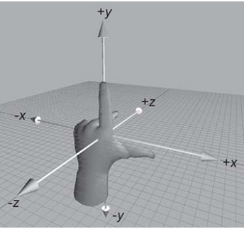

鼠标移动显示

标题标题标题
正文正文正文正文正文正文正文正文正文正文正文正文正文正文正文正文正文正文正文正文正文正文正文正文正文正文正文正文正文正文正文正文正文正文正文正文
鼠标移动图片放大
鼠标移动弹出消息框
摘要摘要摘要摘要摘要摘要摘要摘要摘要
本文主要内容：
过渡：transition
2D 转换 transform
3D 转换 transform
动画：animation
transition的中文含义是过渡。过渡是CSS3中具有颠覆性的一个特征，可以实现元素不同状态间的平滑过渡（补间动画）， 经常用来制作动画效果。
transition-property: all; 如果希望所有的属性都发生过渡，就使用all。
transition-duration: 1s; 过渡的持续时间。
transition-timing-function: linear; 运动曲线。属性值可以是：
linear 线性ease 减速ease-in 加速ease-out 减速ease-in-out 先加速后减速transition-delay: 1s; 过渡延迟。多长时间后再执行这个过渡动画。
上面的四个属性也可以写成综合属性：
transition: 让哪些属性进行过度 过渡的持续时间 运动曲线 延迟时间;
transition: all 3s linear 0s;
鼠标移动显示
标题标题标题
正文正文正文正文正文正文正文正文正文正文正文正文正文正文正文正文正文正文正文正文正文正文正文正文正文正文正文正文正文正文正文正文正文正文正文正文
鼠标移动图片放大
鼠标移动弹出消息框
摘要摘要摘要摘要摘要摘要摘要摘要摘要
转换是 CSS3 中具有颠覆性的一个特征，可以实现元素的位移、旋转、变形、缩放，甚至支持矩阵方式。
转换再配合过渡和动画，可以取代大量早期只能靠 Flash 才可以实现的效果。
在 CSS3 当中，通过 transform 转换来实现 2D 转换或者 3D 转换。
2D转换包括：缩放、移动、旋转。
缩放 transform: scale(x, y); 参数解释： x：表示水平方向的缩放倍数。y：表示垂直方向的缩放倍数。如果只写一个值就是等比例缩放。
位移 transform: translate(水平位移, 垂直位移); 参数解释：参数为百分比，相对于自身移动。正值：向右和向下。 负值：向左和向上。如果只写一个值，则表示水平移动。
旋转 transform: rotate(角度); 参数解释：正值 顺时针；负值：逆时针。
倾斜 transform: skew(x-angle,y-angle)(角度); 参数解释：定义沿着 X 和 Y 轴的 2D 倾斜转换。
下面例子中，鼠标移动至“2”上，2会被X轴放2倍，Y轴放1.2倍。但是不会影响其他元素定位，并不会把兄弟元素挤走。
transform: scale(x, y);
transform: scale(2, 0.5);
1
2
3
参数解释：
参数为百分比，相对于自身移动。
正值：向右和向下。 负值：向左和向上。如果只写一个值，则表示水平移动。
transform: translate(水平位移, 垂直位移);
transform: translate(-50%, -50%);
例1：鼠标悬停“5”之上时 transform: translate(50px, -10px);
1
2
3
例2：利用偏移 translate 来做脱标的居中效果
父亲盒子，设定css为：position: relative; height: 400px;width: 100%；
绿色盒子，设定css为： left: 50%;top: calc(50% + 100px);transform: translate(-50%, -50%);position: absolute;
50%+100px 100px为盒子的一半，所以紧贴底部
1
transform: rotate(角度);
transform: rotate(45deg);
参数解释：正值 顺时针；负值：逆时针。
使用旋转+过渡制作旋转效果
张

如上图所示，伸出左手，让拇指和食指成“L”形，大拇指向右，食指向上，中指指向前方。拇指、食指和中指分别代表X、Y、Z轴的正方向，这样我们就建立了一个左手坐标系。
浏览器的这个平面，是X轴、Y轴；垂直于浏览器的平面，是Z轴。
旋转的方向：（左手法则）
左手握住旋转轴，竖起拇指指向旋转轴的正方向，正向就是其余手指卷曲的方向。
从上面这句话，我们也能看出：所有的3d旋转，对着正方向去看，都是顺时针旋转。
transform: rotateX(360deg); //绕 X 轴旋转360度
transform: rotateY(360deg); //绕 Y 轴旋转360度
transform: rotateZ(360deg); //绕 Z 轴旋转360度
格式：
transform: translateX(100px); //沿着 X 轴移动
transform: translateY(360px); //沿着 Y 轴移动
transform: translateZ(360px); //沿着 Z 轴移动
1
2
3
电脑显示屏是一个 2D 平面，图像之所以具有立体感（3D效果），其实只是一种视觉呈现，通过透视可以实现此目的。
透视可以将一个2D平面，在转换的过程当中，呈现3D效果。但仅仅只是视觉呈现出 3d 效果，并不是正真的3d。
格式有两种写法：
作为一个属性，设置给父元素，作用于所有3D转换的子元素
作为 transform 属性的一个值，做用于元素自身。
perspective: 500px;
3D元素构建是指某个图形是由多个元素构成的，可以给这些元素的父元素设置transform-style: preserve-3d 来使其变成一个真正的3D图形。属性值可以如下：
transform-style: preserve-3d; /* 让 子盒子 位于三维空间里 */
transform-style: flat; /* 让子盒子位于此元素所在的平面内（子盒子被扁平化） */
以下是一个3D的盒子默认情况下perspective: 250px
以下是一个3D的盒子perspective: 350px
以下是一个3D的盒子perspective: 650px
我们刚刚在调用动画时，animation属性的格式如下：
animation属性的格式如下：
animation: 定义的动画名称 持续时间 执行次数 是否反向 运动曲线 延迟执行。(infinite 表示无限次)
animation: move1 1s alternate linear 3;
animation: move2 4s;
可以看出，这里的 animation 是综合属性，接下来，我们把这个综合属性拆分看看。
（1）动画名称：
animation-name: move;
（2）执行一次动画的持续时间：
animation-duration: 4s;
备注：上面两个属性，是必选项，且顺序固定。
（3）动画的执行次数：
animation-iteration-count: 1; //iteration的含义表示迭代
属性值infinite表示无数次。
（4）动画的方向：
animation-direction: alternate;
属性值：normal 正常，alternate 反向。
（5）动画延迟执行：
animation-delay: 1s;
（6）设置动画结束时，盒子的状态：
animation-fill-mode: forwards;
属性值： forwards：保持动画结束后的状态（默认）， backwards：动画结束后回到最初的状态。
（7）运动曲线：
animation-timing-function: ease-in;
属性值可以是：linear ease-in-out steps()等。
注意，如果把属性值写成** steps()，则表示动画不是连续执行**，而是间断地分成几步执行。
我们接下来专门讲一下属性值 steps()。
我们还是拿上面的例子来举例，如果在调用动画时，我们写成：
animation: move2 4s steps(2);
鲨鱼.png是一张270X2160的长图，作为背景默认top为0，通过动画steps 8次，每次top + 270。鲨鱼即可原地游动起来。
鲨鱼原地动
鲨鱼横向移动